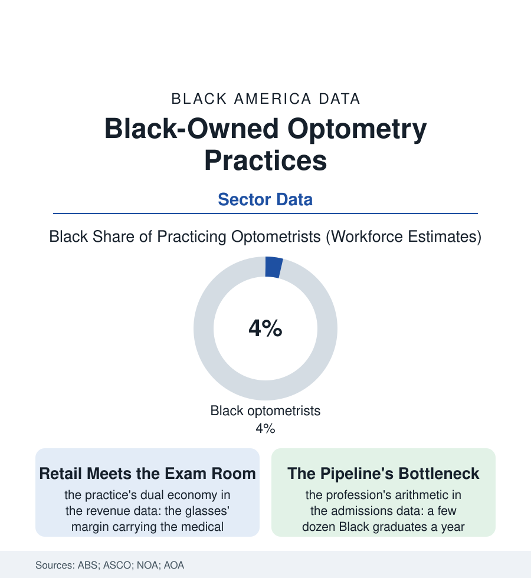

Black Business
The Eye Doctor on the Block: Black-Owned Optometry Practices
The optometry office is where the glaucoma file gets found or missed — and its ownership, in the neighborhoods that need it most, is a small-business story of its own. The optometry file.

Every eye file in the health section routes through one small business: the optometry practice, where the refraction is measured, the glaucoma is caught or missed, and the glasses are fitted and sold. Its ownership map — a profession about four percent Black, its independent practices clustered where the chains decline to go at all — is a business story with direct and measurable clinical consequences. This article reads the optometry file.
Two Businesses in One Room
The practice's economics are a treaty between two trades sharing a door: the medical practice (the exam, the disease management, the diabetic and glaucoma files' front line — reimbursed by the vision plans and medical insurers at the fee schedules of the insurance file) and the optical shop (the frames and lenses whose retail margin, in the industry data, has historically carried the whole enterprise — the treaty under permanent renegotiation by the online retailers' price transparency and the giant chains' vertical integration, the frame manufacturers owning the stores owning the plans in the consolidation the trade press maps in diagrams). The independent Black practice sits in this crossfire at the neighborhood scale: its moat the trust and the tenure of the service file (the doctor who examined the grandmother's cataracts and the grandson's first frames, whose recall system is the glaucoma file's screening calendar made flesh — the practice's recall list being, quite literally, the difference between the pressure caught and the pressure missed in the blocks it serves), its vulnerabilities the sector's standard ones squared (the vision-plan fee schedules set by the giants it competes with, the equipment ladder — the retinal camera and the visual-field analyzer of the modern exam priced like the imaging file's machines in miniature — the succession question when the founding doctor's forty-year practice meets a buyer market that prices the neighborhood's goodwill at the chains' discount). The corporate alternative writes the map's other half: the chain locations' distribution following the retail geography of the suburb file, the exam deserts of the inner neighborhoods filled, where they are filled, by the independents of this file and the health centers' part-time sessions.
The Pipeline Behind the Chair
The ownership map of the next generation is being drawn in the admissions data: optometry's student body diversifying at the pace of the professional files generally — Black enrollment in the low single digits of the nation's two dozen schools in the ASCO counts, a few dozen graduates a year entering a profession of forty thousand — the National Optometric Association (the profession's Black association, founded in the civil-rights era's pattern) running the pipeline's machinery: the school visits, the mentorship pairings, the HBCU undergraduate chapters from which the applicants disproportionately come. The practice-formation data add the entrepreneur's chapter: the new graduate's choice between the chain's salary (the debt file's arithmetic arguing for it, the loan balances of the professional graduates running to the mortgage file's numbers) and the cold-start or buy-in practice whose ownership the ABS will count a decade later — the buyout of the retiring independent by her associate standing, in the trade data, as the ownership ladder's most reliable rung and its least financed, the practice-loan products of the finance file only lately learning to price a recall list as an asset. The file's stake is stated by the health section's own logic: the diabetic eye, the hypertensive retina, the silent pressure — all of them found, in the neighborhoods of this atlas, by whoever owns the exam room on the block. At four percent and climbing, the answer is changing at the pace of a few dozen graduations a year — the slowest, surest compounding in the book.
Reading the Optometry Data
The optometry file is the business section at its most clinical: a storefront where the product is sight itself, its preservation scheduled in recall postcards. The census counts the practices. The waiting room — grandmother, grandson, forty years of charts in one family's folder — counts the rest, in the only unit the file trades in: vision, kept. See the block clearly, the practice's whole charter runs, and staff the room that sees it back.
More in Black Business
Black-Owned Businesses: Counts, Receipts, and the Representation Gap
About 161,000 Black-owned employer firms and three million solo ventures: how the Census Bureau counts Black business ownership, where firms concentrate, and the gap between population share and business share.
Black Median Net Worth: The Wealth Gap in Federal Reserve Data
The Federal Reserve puts Black median family net worth at $44,900, against $285,000 for White families — about 16 cents on the dollar. The widest gap in economic data.
Black Buying Power: The $1.8 Trillion Consumer Economy
Black buying power is estimated at about $1.8 trillion — larger than the economy of most nations. What the figure measures, who produces it, and what it buys.
Source: U.S. Census Bureau Annual Business Survey; Association of Schools and Colleges of Optometry; National Optometric Association; American Optometric Association workforce data.